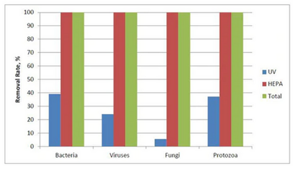

How to Pick an Air Cleaner
52
Image by macrovector at Freepik
With a wide array of air cleaners available in the market and an abundance of misinformation circulating, selecting the right air cleaner can be a challenging task. This comprehensive guide is here to help you navigate through the noise and make an informed decision.
How Much Clean Air Do You Need?
Determining the amount of clean air necessary for your space is crucial when selecting an air cleaner. This measurement is commonly referred to as the Clean Air Delivery Rate (CADR), and it is typically quantified in cubic feet per minute (CFM), liters per second (lps), or cubic meters per hour (m³/h).
The industry-standard approach, as recommended by AHAM (Association of Home Appliance Manufacturers), is to use the 2/3 rule. According to this rule, the CADR should be 2/3 of the area measured in square feet. For instance, if your space is 300 square feet, the air cleaner’s CADR should be calculated as 300 x 2/3 = 200 CFM. This provides five air changes per hour in residential spaces with 8-foot ceilings, or 4.4 air changes per hour in most commercial areas with 9-foot ceilings.
When using metric units, the calculation follows the 3.4 rule. If your space is 100 square meters, the recommended CADR for a HEPA filter would be 100 x 3.4 = 340 lps.
To summarize, the formulas for sizing an air cleaner are as follows:
CADR (CFM) =
Area (ft²) x 2/3
CADR (lps) = Area (m²) x 3.4
CADR (m³/h) = Area (m²) x 12.2
Please be aware that some manufacturers report the area that their device cleans, but do not use the 2/3 rule. For example, Austin Air uses a 1/6 rule. For their product with a CADR (they call it true air flow) of 250 CFM, they claim it cleans 1500 sq ft where AHAM would state it is only appropriate for 375 square ft. Their standard is 4 times lower than what is adhered to by AHAM. It’s best to calculate the CADR yourself.
Noise

When it comes to portable air cleaners, three main issues often arise: noise, air distribution, and human operation. Among these, noise is typically the most significant concern. To determine acceptable noise levels for different settings, Clean Air Stars provides a rough guide:
Bedroom: <
40 dBA
Classroom & Quiet Office: 40–45 dBA
Loud Office & Childcare: 45–50 dBA
Loud Restaurant & Gym: < 60 dBA
Very loud environments: >60 dBA
It is uncommon to find air cleaners advertised with noise levels below 45 dBA which is required in many settings. To address this, one approach is to run the air cleaners on lower speeds and purchasing multiple units. For more insights into tackling the noise issue associated with HEPA filters, refer to this post on solving HEPA filter noise problems.
The Clean Air Stars selection tool also aids in accounting for noise when choosing an air cleaner. By factoring in noise levels, you can make an informed decision that meets both your air purification needs and noise tolerance levels.
Efficiency vs. Effectiveness
When evaluating air filters, it’s essential to understand the difference between efficiency and effectiveness. Efficiency refers to the percentage of particles a filter can remove in a single pass. For instance, a HEPA filter can remove approximately 99.95% of particles, while a MERV-13 filter, which is less efficient, may only remove around 77% of particles.
On the other hand, effectiveness in the context of air cleaners is measured by the Clean Air Delivery Rate (CADR). A higher CADR indicates a more effective unit. The CADR of an air cleaner is calculated by multiplying the airflow by the efficiency. The efficiency alone does not provide a full picture of an air cleaner’s effectiveness.
For example, many portable HEPA filters have a CADR ranging from 150 to 250 CFM. In comparison, a Corsi-Rosenthal Box (CR Box) that utilizes MERV-13 filters can have a CADR between 300 and 500 CFM. Despite the lower efficiency of the MERV-13 filters compared to HEPA filters, the CR Box is more effective and would be the preferable choice, all other factors being equal. This is because the CR Box has significantly higher airflow, compensating for the lower efficiency.
Here are some examples of misinformation regarding efficiency and effectiveness:
Austin Air Systems: “We believe that the greatest benefit to the consumer is a higher filtration efficiency, not a faster rate of air flow”
Alen: “We believe a higher filtration efficiency is more important than a higher airflow rate, giving you the greatest benefit from our air purifiers.”
Both of these statements are clearly false and contradict basic physics. The steady-state concentration of pollutants is determined by their production rate and removal rate. Increasing the removal rate (which is the same as the CADR) is what truly matters, rather than focusing on filter efficiency.
However, one caveat regarding efficiency is that filters should adhere to an accepted standard. The most common standard is H13 HEPA, but MERV filters rated 11 or higher are also acceptable. Be cautious of companies that offer unrated filters under different names like “HEPA style” or “Hyper HEPA.” If a filter does not adhere to an accepted standard, it is advisable to avoid it. It’s worth noting that “Medical grade HEPA” and “True HEPA” are marketing names for H13 filters. For more information about different filter types, see this post.
Cost
Effectiveness and cost are not always directly correlated when it comes to air cleaners. In many cases, expensive HEPA filters may be less effective, while reasonably priced ones can provide suitable performance. Residential HEPA filters are often just as effective as their commercial counterparts but come at a lower cost.
Additional features often contribute to an increase in cost, but they may not necessarily enhance the overall effectiveness of the air cleaner. In fact, as we will explore, these features are typically ineffective and, in some cases, may even be potentially harmful.
UV
UV (Ultraviolet) technology can be utilized in different ways to combat airborne diseases, but in the context of portable air cleaners, it is mainly employed in two ways. The first method is germicidal UV (GUV), where pathogens are directly exposed to ultraviolet light to inactivate them. The second approach involves using a catalyst with UV to generate radicals that are released into the space, known as photocatalytic oxidation (PCO). PCO will be described in more detail in the Active Technologies section.
Some air cleaners solely rely on UV without incorporating a filter. However, there are drawbacks to these devices. They often tend to be more expensive than HEPA filters, and they do not remove other particulate matter. Fine particulate matter is the most harmful indoor air pollutant, and HEPA filters not only provide protection against airborne diseases but also effectively reduce particulate matter. While UV-only air cleaners can be used, in my opinion, they are usually not worth it.
In many cases, portable air cleaners with HEPA filters may include UV lights as an additional feature. However, if the HEPA filter already removes 99.95% of particles from the air, the benefit of UV light would be minimal. An example highlighting this can be observed from data provided by Airpura.

According to their own data, the HEPA filter achieves a 100% removal rate, rendering the UV component ineffective in terms of overall air purification.
UV can also be used to disinfect the filters, based on concerns regarding resuspension, which involves pathogens depositing on the filters and potentially getting released back into the air during filter changes or if the filter is jostled. However, the risk associated with this concern is small. Furthermore, pathogens decay and do not live that long, so even if they do get resuspended at a later date, risk from infection is very low. In the event of a known case of COVID-19 or another respiratory infection, it is advisable to wait for a day before changing the filters to allow any viruses present to decay naturally. UV disinfection is not necessary for this purpose.
In summary, incorporating UV technology in air cleaners incurs additional costs, does not provide the benefit of removing other particulate matter, and proves ineffective when combined with HEPA filters.
Antimicrobial Coating
There has been research conducted on the effectiveness of adding antimicrobial coatings to filters, and the findings indicate that such coatings do not provide any benefit. These studies have shown that once aerosols are captured on HEPA filters, they tend to remain attached and do not detach easily. This suggests that resuspension, the concern of virus particles being released back into the air, is not a significant issue. When a virus particle is trapped by the filter, it will typically remain there without posing a risk of being reintroduced into the environment.
Therefore, based on current research, there is no substantial advantage to incorporating antimicrobial coatings on air filters.
Pre-Filters
A pre-filter’s purpose is to capture larger dust particles and prevent them from clogging the HEPA filter, thereby extending its lifespan. However, incorporating a pre-filter adds extra costs for replacement. Instead, it is more practical to focus on replacing the HEPA filter when needed. In my opinion, it is not worth the investment to include a pre-filter in most portable air cleaners. Timely replacement of the HEPA filter ensures optimal performance without the added complexity and expenses of a separate pre-filter.
Carbon Filters
Carbon filters can remove volatile organic compounds (VOCs), ozone, and odors. They can potentially be effective if sized properly. However, air cleaners rarely provide equivalent outdoor air delivery rates for the carbon filters. They also become saturated over time and would then become ineffective. Unfortunately, many portable air cleaners do not provide clear information on the longevity and effectiveness of their carbon filters.
While carbon filters are a harmless feature, they may not necessarily deliver the desired results. Additionally, carbon filters do not remove particulate matter which includes airborne diseases. Therefore, they have no impact on addressing health concerns related to viruses or other particulate matter.
In general, when dealing with VOCs and odors, the most effective approach is through ventilation by supplying fresh outdoor air to the space.
Considering the uncertainty surrounding the effectiveness of carbon filters, they are not something that should be generally pursued, but should not deter you from purchasing the air purifier altogether.
Active Technologies
Ionization, Bipolar ionization, Plasma and Plasma Wave
These technologies release ions into the air. The primary mechanism of these technologies is agglomeration, where particles stick together, making them heavier and causing them to either adhere to surfaces or settle out of the air at a faster rate.
Photocatalytic Oxidation (PCO) or UV with catalyst
PCO uses UV with a catalyst and it can create hydroxyl radicals. However, it’s important to note that PCO technology can go by various names, adding to the confusion.
· This Sanuvox device states it has a cobalt catalyst in the benefits
· ActivePure is not very clear about how their technology works on their website, but indicate here that it is PCO technology
· TrioPlus uses ProCell which uses an aluminum honeycomb as a catalyst for UV light.
· Germ Guardian “works with Titanium Dioxide to reduce volatile organic compounds”
When it comes to active technologies, if a product incorporates UV with a surface or catalyst, it generally falls under the PCO category. The effects of PCO depend on the specific compounds present in the air.
Other Additive Technologies
Other additive technologies create compounds including hydroxyl ions, ozone, hydrogen peroxide or simply fall under the category of “active technologies.” Sometimes companies often avoid providing explicit details about their technology, which raises concerns. If it’s not clear what technology a product utilizes, it’s best to avoid it.
All these technologies have the potential to create byproducts in the air.
Standardization of Active Technologies
The use of any technology requires ensuring it is both safe and effective. When considering additive air cleaners like ionization, PCO, or other active technologies, it’s important to be cautious of their claims regarding virus reduction. These claims (like 99% particles reduced in one hour) can be misleading and may not reflect real-world effectiveness as described here. These claims are meaningless unless you know the size of the chamber where the experiment was performed and the percent reduction in the control test when the equipment is turned off. To determine the safety and effectiveness of air cleaners, the draft of ASHRAE 241 Appendix A provides a useful framework.
The key metric to consider is the clean air delivery rate (CADR) or equivalent outdoor air delivery rate (EOADR). This data is crucial for evaluating air cleaners accurately. The Ontario Society of Professional Engineers provides a calculator for determining the effectiveness of these systems, found here. If manufacturers do not provide an equivalent outdoor air delivery rate, do not use their product. If they claim that their product does not work that way, then they do not understand how their product works. It can be calculated.
For safety, ensure that additive air cleaners comply with UL2998 standards to avoid ozone generation. Also ensure from independent tests that no additional formaldehyde or particulate matter is generated. If these tests do not exist, do not purchase it.
Once you have confirmed the effectiveness through the equivalent outdoor air delivery rate and that it produces no byproducts, you can determine if the device is cost effective compared to HEPA filters.
If you choose not to go through this process, sticking with HEPA filters is the preferable option. They provide clean air delivery rates as an easy way to ensure effectiveness and do not introduce harmful pollutants into the air. In general, I would avoid all active technologies. If you are purchasing an air cleaner that has both a HEPA filter and an active technology as an addition (like HEPA + ionization), I would disable the active component.
Air Distribution
Proper air distribution is vital for effective air cleaner performance and risk reduction within a space. If the clean air from the air cleaner doesn’t mix well with the air in the space and simply circulates back to the intake, its effectiveness is reduced.
To ensure optimal air distribution, use fans to promote air mixing, but be cautious about creating direct currents between people. Ceiling fans are ideal for achieving proper air mixing without generating horizontal currents. The CDC has a good resource on fan use (FAQ #11). Using HEPA filters that blow up also prevents creation of direct currents between people.
In addition, placement plays a role in air distribution. Position air cleaners away from walls or obstructions and closer to the center of the space to ensure proper mixing of clean air throughout the area.
Human Operation
Everyone has seen HEPA filters turned off in different spaces. A HEPA filter that is not running is entirely ineffective. While addressing noise concerns is crucial, proper labeling and educating occupants are essential to maximize the effectiveness of these devices.
To ensure the efficacy of air cleaners:
1. Address noise-related concerns to encourage continuous operation.
2. Clearly label the operation instructions of air cleaners to promote awareness among occupants.
3. Provide appropriate training and education to occupants regarding the importance of operating the air cleaners to maintain clean and healthy indoor air.
Ignoring the human operation aspect of air cleaners will lead to a failed strategy.
Best Options & Resources
When it comes to air cleaners, the top choices are commercial HEPA filters, box fan CR boxes, and PC fan CR boxes. Each option has its own considerations, which I discuss here. Personally, I prefer using PC fan CR boxes. If you’re interested in purchasing commercial HEPA filters, I recommend utilizing the Clean Air Stars filter selection tool. Clean Air Crew also provides good resources for selecting portable air cleaners.
Summary
In summary, here are the key points to consider when selecting air cleaners:
1. Determine the required clean air delivery rate (CADR) based on the size of the space and occupancy.
2. Choose air cleaners that meet the CADR requirements while considering the noise profile. Higher cost does not mean a better product.
3. Ignore features such as pre-filters, carbon filters, UV and antimicrobial coatings as they are often ineffective or unnecessary and can add cost.
4. Avoid additive air cleaners unless you determine the equivalent outdoor air delivery rate, confirm no increase in ozone, formaldehyde or particulate matter through independent tests and find it to be more cost-effective than HEPA filters.
5. Ensure proper air distribution within the space and provide clear signage and training for proper usage.
By following these guidelines, you can make informed decisions when selecting air cleaners and ensure their optimal use for cleaner and healthier indoor environments.
I have no conflicts of interest.